Create a Pipeline in Blue Ocean
|
This site is the new docs site currently being tested. For the actual docs in use please go to https://www.jenkins.io/doc. |
This tutorial shows you how to use the Blue Ocean feature of Jenkins to create a Pipeline that orchestrates building a simple application.
Before you start this tutorial, be sure to run through at least one of the initial tutorials from the tutorials overview page. This will help you learn about CI/CD concepts, relevant to the technology stack you’re most familiar with, and how these concepts are implemented in Jenkins.
This tutorial uses the same application that the build a Node.js and React app with npm tutorial is based on. Therefore, you’re building the same application, but this time, completely through Blue Ocean. Since Blue Ocean provides a simplified Git-handling experience, you’ll be interacting directly with the repository on GitHub, as opposed to a local clone.
Duration: This tutorial takes 20-40 minutes to complete if you’ve already met the include::partial$prerequisites.adoc[prerequisites] below.
The exact duration depends on the speed of your machine and whether or not you’ve already run Jenkins in Docker from another tutorial.
|
Blue Ocean status
Blue Ocean will not receive further functionality updates. Blue Ocean will continue to provide easy-to-use Pipeline visualization, but it will not be enhanced further. It will only receive selective updates for significant security issues or functional defects. Alternative options for Pipeline visualization, such as the Pipeline: Stage View and Pipeline Graph View plugins, are available and offer some of the same functionality. While not complete replacements for Blue Ocean, contributions are encouraged from the community for continued development of these plugins. The Pipeline syntax snippet generator assists users as they define Pipeline steps with their arguments. It is the preferred tool for Jenkins Pipeline creation, as it provides online help for the Pipeline steps available in your Jenkins controller. It uses the plugins installed on your Jenkins controller to generate the Pipeline syntax. Refer to the Pipeline steps reference page for information on all available Pipeline steps. |
You can stop this tutorial at any point in time and continue from where you left off.
If you’ve already run though another tutorial, you can skip the include::partial$prerequisites.adoc[prerequisites] and run Jenkins in Docker sections below and proceed to include::partial$fork-sample-repository.adoc[forking the sample repository]. If you need to restart Jenkins, follow the restart instructions in run Jenkins in Docker and then proceed.
Prerequisites
For this tutorial, you will require:
-
A macOS, Linux or Windows machine with:
-
256 MB of RAM, although more than 2 GB is recommended.
-
10 GB of drive space for Jenkins and your Docker images and containers.
-
-
The following software installed:
-
Docker - Read more about installing Docker in the Installing Docker section of the Installing Jenkins page.
Note: If you use Linux, this tutorial assumes that you are not running Docker commands as the root user, but instead with a single user account that also has access to the other tools used throughout this tutorial.
-
Run Jenkins in Docker
In this tutorial, you’ll be running Jenkins as a Docker container from the
jenkins/jenkins Docker
image.
To run Jenkins in Docker, follow the relevant instructions below for either macOS and Linux or Windows.
You can read more about Docker container and image concepts in the Docker section of the Installing Jenkins page.
On macOS and Linux
-
Open up a terminal window.
-
Create a bridge network in Docker using the following
docker network createcommand:docker network create jenkins -
In order to execute Docker commands inside Jenkins nodes, download and run the
docker:dindDocker image using the followingdocker runcommand:docker run \ --name jenkins-docker \(1) --rm \(2) --detach \(3) --privileged \(4) --network jenkins \(5) --network-alias docker \(6) --env DOCKER_TLS_CERTDIR=/certs \(7) --volume jenkins-docker-certs:/certs/client \(8) --volume jenkins-data:/var/jenkins_home \(9) --publish 2376:2376 \(10) --publish 3000:3000 --publish 5000:5000 \(11) docker:dind \(12) --storage-driver overlay2 (13)1 ( Optional ) Specifies the Docker container name to use for running the image. By default, Docker will generate a unique name for the container. 2 ( Optional ) Automatically removes the Docker container (the instance of the Docker image) when it is shut down. 3 ( Optional ) Runs the Docker container in the background. This instance can be stopped later by running docker stop jenkins-docker.4 Running Docker in Docker currently requires privileged access to function properly. This requirement may be relaxed with newer Linux kernel versions. 5 This corresponds with the network created in the earlier step. 6 Makes the Docker in Docker container available as the hostname dockerwithin thejenkinsnetwork.7 Enables the use of TLS in the Docker server. Due to the use of a privileged container, this is recommended, though it requires the use of the shared volume described below. This environment variable controls the root directory where Docker TLS certificates are managed. 8 Maps the /certs/clientdirectory inside the container to a Docker volume namedjenkins-docker-certsas created above.9 Maps the /var/jenkins_homedirectory inside the container to the Docker volume namedjenkins-data. This will allow for other Docker containers controlled by this Docker container’s Docker daemon to mount data from Jenkins.10 ( Optional ) Exposes the Docker daemon port on the host machine. This is useful for executing dockercommands on the host machine to control this inner Docker daemon.11 Exposes ports 3000 and 5000 from the docker in docker container, used by some of the tutorials. 12 The docker:dindimage itself. This image can be downloaded before running by using the command:docker image pull docker:dind.13 The storage driver for the Docker volume. See "Docker storage drivers" for supported options. Note: If copying and pasting the command snippet above does not work, try copying and pasting this annotation-free version here:
docker run --name jenkins-docker --rm --detach \ --privileged --network jenkins --network-alias docker \ --env DOCKER_TLS_CERTDIR=/certs \ --volume jenkins-docker-certs:/certs/client \ --volume jenkins-data:/var/jenkins_home \ --publish 3000:3000 --publish 5000:5000 --publish 2376:2376 \ docker:dind --storage-driver overlay2 -
Customise official Jenkins Docker image, by executing below two steps:
-
Create Dockerfile with the following content:
FROM jenkins/jenkins:{jenkins-stable}-jdk17 USER root RUN apt-get update && apt-get install -y lsb-release RUN curl -fsSLo /usr/share/keyrings/docker-archive-keyring.asc \ https://download.docker.com/linux/debian/gpg RUN echo "deb [arch=$(dpkg --print-architecture) \ signed-by=/usr/share/keyrings/docker-archive-keyring.asc] \ https://download.docker.com/linux/debian \ $(lsb_release -cs) stable" > /etc/apt/sources.list.d/docker.list RUN apt-get update && apt-get install -y docker-ce-cli USER jenkins RUN jenkins-plugin-cli --plugins "blueocean:1.27.9 docker-workflow:572.v950f58993843" -
Build a new docker image from this Dockerfile and assign the image a meaningful name, e.g. "myjenkins-blueocean:{jenkins-stable}-1":
docker build -t myjenkins-blueocean:{jenkins-stable}-1 .Keep in mind that the process described above will automatically download the official Jenkins Docker image if this hasn’t been done before.
-
-
Run your own
myjenkins-blueocean:{jenkins-stable}-1image as a container in Docker using the followingdocker runcommand:docker run \ --name jenkins-blueocean \(1) --detach \(2) --network jenkins \(3) --env DOCKER_HOST=tcp://docker:2376 \(4) --env DOCKER_CERT_PATH=/certs/client \ --env DOCKER_TLS_VERIFY=1 \ --publish 8080:8080 \(5) --publish 50000:50000 \(6) --volume jenkins-data:/var/jenkins_home \(7) --volume jenkins-docker-certs:/certs/client:ro \(8) --volume "$HOME":/home \(9) --restart=on-failure \(10) --env JAVA_OPTS="-Dhudson.plugins.git.GitSCM.ALLOW_LOCAL_CHECKOUT=true" \(11) myjenkins-blueocean:{jenkins-stable}-1 (12)1 ( Optional ) Specifies the Docker container name for this instance of the Docker image. 2 ( Optional ) Runs the current container in the background (i.e. "detached" mode) and outputs the container ID. If you do not specify this option, then the running Docker log for this container is output in the terminal window. 3 Connects this container to the jenkinsnetwork defined in the earlier step. This makes the Docker daemon from the previous step available to this Jenkins container through the hostnamedocker.4 Specifies the environment variables used by docker,docker-compose, and other Docker tools to connect to the Docker daemon from the previous step.5 Maps (i.e. "publishes") port 8080 of the current container to port 8080 on the host machine. The first number represents the port on the host while the last represents the container’s port. Therefore, if you specified -p 49000:8080for this option, you would be accessing Jenkins on your host machine through port 49000.6 ( Optional ) Maps port 50000 of the current container to port 50000 on the host machine. This is only necessary if you have set up one or more inbound Jenkins agents on other machines, which in turn interact with your jenkins-blueoceancontainer (the Jenkins "controller"). Inbound Jenkins agents communicate with the Jenkins controller through TCP port 50000 by default. You can change this port number on your Jenkins controller through the Security page. If you were to change the TCP port for inbound Jenkins agents of your Jenkins controller to 51000 (for example), then you would need to re-run Jenkins (via thisdocker run …command) and specify this "publish" option with something like--publish 52000:51000, where the last value matches this changed value on the Jenkins controller and the first value is the port number on the machine hosting the Jenkins controller. Inbound Jenkins agents communicate with the Jenkins controller on that port (52000 in this example). Note that WebSocket agents do not need this configuration.7 Maps the /var/jenkins_homedirectory in the container to the Docker volume with the namejenkins-data. Instead of mapping the/var/jenkins_homedirectory to a Docker volume, you could also map this directory to one on your machine’s local file system. For example, specifying the option
--volume $HOME/jenkins:/var/jenkins_homewould map the container’s/var/jenkins_homedirectory to thejenkinssubdirectory within the$HOMEdirectory on your local machine, which would typically be/Users/<your-username>/jenkinsor/home/<your-username>/jenkins. Note that if you change the source volume or directory for this, the volume from thedocker:dindcontainer above needs to be updated to match this.8 Maps the /certs/clientdirectory to the previously createdjenkins-docker-certsvolume. This makes the client TLS certificates needed to connect to the Docker daemon available in the path specified by theDOCKER_CERT_PATHenvironment variable.9 Maps the $HOMEdirectory on the host (i.e. your local) machine (usually the/Users/<your-username>directory) to the/homedirectory in the container. Used to access local changes to the tutorial repository.10 Configure the Docker container restart policy to restart on failure as described in the blog post. 11 Allow local checkout for the tutorial. See SECURITY-2478 for the reasons why this argument should not be used on a production installation. 12 The name of the Docker image, which you built in the previous step. Note: If copying and pasting the command snippet above does not work, try copying and pasting this annotation-free version here:
docker run --name jenkins-blueocean --detach \ --network jenkins --env DOCKER_HOST=tcp://docker:2376 \ --env DOCKER_CERT_PATH=/certs/client --env DOCKER_TLS_VERIFY=1 \ --publish 8080:8080 --publish 50000:50000 \ --volume jenkins-data:/var/jenkins_home \ --volume jenkins-docker-certs:/certs/client:ro \ --volume "$HOME":/home \ --restart=on-failure \ --env JAVA_OPTS="-Dhudson.plugins.git.GitSCM.ALLOW_LOCAL_CHECKOUT=true" \ myjenkins-blueocean:{jenkins-stable}-1 -
Proceed to the Post-installation setup wizard.
On Windows
The Jenkins project provides a Linux container image, not a Windows container image.
Be sure that your Docker for Windows installation is configured to run Linux Containers rather than Windows Containers.
See the Docker documentation for instructions to switch to Linux containers.
Once configured to run Linux Containers, the steps are:
-
Open up a command prompt window and similar to the macOS and Linux instructions above do the following:
-
Create a bridge network in Docker
docker network create jenkins -
Run a docker:dind Docker image
docker run --name jenkins-docker --detach ^ --privileged --network jenkins --network-alias docker ^ --env DOCKER_TLS_CERTDIR=/certs ^ --volume jenkins-docker-certs:/certs/client ^ --volume jenkins-data:/var/jenkins_home ^ --publish 3000:3000 --publish 5000:5000 --publish 2376:2376 ^ docker:dind -
Customise official Jenkins Docker image, by executing below two steps:
-
Create Dockerfile with the following content:
FROM jenkins/jenkins:{jenkins-stable}-jdk17 USER root RUN apt-get update && apt-get install -y lsb-release RUN curl -fsSLo /usr/share/keyrings/docker-archive-keyring.asc \ https://download.docker.com/linux/debian/gpg RUN echo "deb [arch=$(dpkg --print-architecture) \ signed-by=/usr/share/keyrings/docker-archive-keyring.asc] \ https://download.docker.com/linux/debian \ $(lsb_release -cs) stable" > /etc/apt/sources.list.d/docker.list RUN apt-get update && apt-get install -y docker-ce-cli USER jenkins RUN jenkins-plugin-cli --plugins "blueocean:1.27.9 docker-workflow:572.v950f58993843" -
Build a new docker image from this Dockerfile and assign the image a meaningful name, e.g. "myjenkins-blueocean:{jenkins-stable}-1":
docker build -t myjenkins-blueocean:{jenkins-stable}-1 .Keep in mind that the process described above will automatically download the official Jenkins Docker image if this hasn’t been done before.
-
-
Run your own
myjenkins-blueocean:{jenkins-stable}-1image as a container in Docker using the followingdocker runcommand:docker run --name jenkins-blueocean --detach ^ --network jenkins --env DOCKER_HOST=tcp://docker:2376 ^ --env DOCKER_CERT_PATH=/certs/client --env DOCKER_TLS_VERIFY=1 ^ --volume jenkins-data:/var/jenkins_home ^ --volume jenkins-docker-certs:/certs/client:ro ^ --volume "%HOMEDRIVE%%HOMEPATH%":/home ^ --restart=on-failure ^ --env JAVA_OPTS="-Dhudson.plugins.git.GitSCM.ALLOW_LOCAL_CHECKOUT=true" ^ --publish 8080:8080 --publish 50000:50000 myjenkins-blueocean:{jenkins-stable}-1 -
Proceed to the Setup wizard.
Accessing the Docker container
If you have some experience with Docker and you wish or need to access your
Docker container through a terminal/command prompt using the
docker exec
command, you can add an option like --name jenkins-tutorial to the docker exec command.
That will access the Jenkins Docker container named "jenkins-tutorial".
This means you could access your docker container (through a separate
terminal/command prompt window) with a docker exec command like:
docker exec -it jenkins-blueocean bash
Accessing the Docker logs
There is a possibility you may need to access the Jenkins console log, for instance, when Unlocking Jenkins as part of the Post-installation setup wizard.
The Jenkins console log is easily accessible through the terminal/command
prompt window from which you executed the docker run … command.
In case if needed you can also access the Jenkins console log through the
Docker logs of
your container using the following command:
docker logs <docker-container-name>
Your <docker-container-name> can be obtained using the docker ps command.
Accessing the Jenkins home directory
There is a possibility you may need to access the Jenkins home directory, for
instance, to check the details of a Jenkins build in the workspace
subdirectory.
If you mapped the Jenkins home directory (/var/jenkins_home) to one on your
machine’s local file system (i.e. in the docker run … command
above), then you can access the
contents of this directory through your machine’s usual terminal/command prompt.
Otherwise, if you specified the --volume jenkins-data:/var/jenkins_home option in
the docker run … command, you can access the contents of the Jenkins home
directory through your container’s terminal/command prompt using the
docker container exec
command:
docker container exec -it <docker-container-name> bash
As mentioned above,
your <docker-container-name> can be obtained using the
docker container ls
command. If you specified the
--name jenkins-blueocean option in the docker container run …
command above (see also
Accessing the Jenkins/Blue
Ocean Docker container), you can simply use the docker container exec command:
docker container exec -it jenkins-blueocean bash
Setup wizard
Before you can access Jenkins, there are a few quick "one-off" steps you’ll need to perform.
Unlocking Jenkins
When you first access a new Jenkins instance, you are asked to unlock it using an automatically-generated password.
-
After the 2 sets of asterisks appear in the terminal/command prompt window, browse to
http://localhost:8080and wait until the Unlock Jenkins page appears.
-
Display the Jenkins console log with the command:
docker logs jenkins-blueocean -
From your terminal/command prompt window again, copy the automatically-generated alphanumeric password (between the 2 sets of asterisks).

-
On the Unlock Jenkins page, paste this password into the Administrator password field and click Continue.
Customizing Jenkins with plugins
After unlocking Jenkins, the Customize Jenkins page appears.
On this page, click Install suggested plugins.
The setup wizard shows the progression of Jenkins being configured and the suggested plugins being installed. This process may take a few minutes.
Creating the first administrator user
Finally, Jenkins asks you to create your first administrator user.
-
When the Create First Admin User page appears, specify your details in the respective fields and click Save and Finish.
-
When the Jenkins is ready page appears, click Start using Jenkins.
Notes:-
This page may indicate Jenkins is almost ready! instead and if so, click Restart.
-
If the page doesn’t automatically refresh after a minute, use your web browser to refresh the page manually.
-
-
If required, log in to Jenkins with the credentials of the user you just created and you’re ready to start using Jenkins!
Stopping and restarting Jenkins
Throughout the remainder of this tutorial, you can stop your Docker container by running:
docker stop jenkins-blueocean jenkins-dockerTo restart your Docker container:
-
Run the same
docker run …commands you ran for macOS, Linux or Windows above. -
Browse to
http://localhost:8080. -
Wait until the log in page appears and log in.
Fork the sample repository on GitHub
Fork the simple "Welcome to React" Node.js and React application on GitHub into your own GitHub account.
-
Ensure you are signed in to your GitHub account. If you don’t yet have a GitHub account, sign up for a free on the GitHub website.
-
Fork the
creating-a-pipeline-in-blue-oceanrepository on GitHub into your local GitHub account. If you need help with this process, refer to the fork a repo documentation on the GitHub website for more information.
| This is a different repository than the one used in the build a Node.js and React app with npm tutorial. Although these repositories contain the same application code, ensure you fork and use the correct one before continuing. |
Create your Pipeline project in Blue Ocean
-
Go back to Jenkins and ensure you have accessed the Blue Ocean interface. To do this, make sure you have:
-
browsed to
http://localhost:8080/blueand are logged in. -
browsed to
http://localhost:8080/, are logged in, and have selected Open Blue Ocean on the left side of the screen.
-
-
In the Welcome to Jenkins box at the center of the Blue Ocean interface, select Create a new Pipeline to start the Pipeline creation wizard. If you don’t see this box, select New Pipeline in the upper right.
-
In Where do you store your code?, select GitHub.
-
In Connect to GitHub, select Create an access key here. This opens GitHub in a new browser tab.
If you previously configured Blue Ocean to connect to GitHub using a personal access token, Blue Ocean takes you directly to step 9 below. -
In the new tab, sign in to your GitHub account if necessary. On the GitHub New Personal Access Token page, specify a brief Token description for your GitHub access token, for example
Blue Ocean.An access token is usually an alphanumeric string that represents your GitHub account, along with permissions to access various GitHub features and areas through your account. This access token has the appropriate permissions pre-selected that Blue Ocean requires to access and interact with your GitHub account. -
Scroll down to the end of the page, while leaving all other Select scopes options with their default settings, and select Generate token.
-
On the Personal access tokens page, copy your newly-generated access token.
-
Back in Blue Ocean, paste the access token into the Your GitHub access token field, and select Connect.
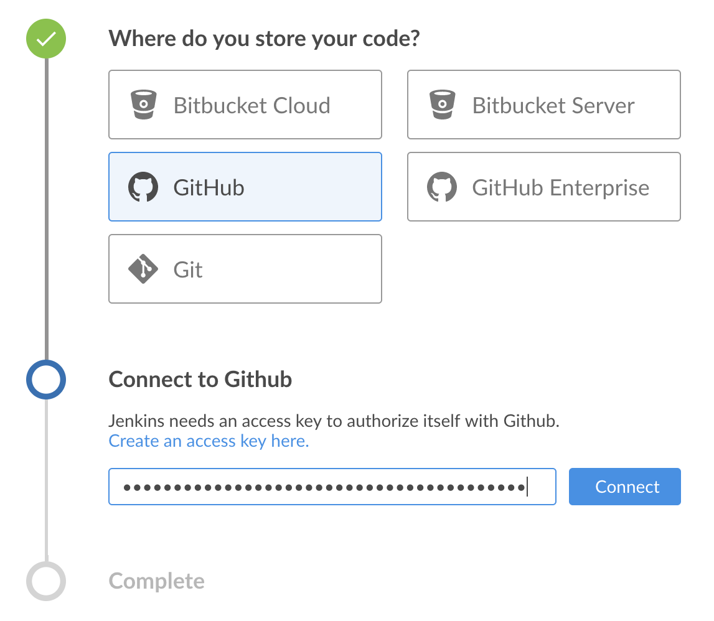
[#choose-github-account]Jenkins now has access to your GitHub account, using your access token.
-
In Which organization does the repository belong to?, select your GitHub account where you forked the repository include::partial$fork-sample-repository.adoc[forking the sample repository].
-
In Choose a repository, select your forked repository
creating-a-pipeline-in-blue-ocean. -
Select Create Pipeline.
-
Blue Ocean detects that there is no Jenkinsfile at the root level of the repository’s
masterbranch and helps you create one. You must select Create Pipeline again at the end of the page to proceed.
-
| Under the hood, a Pipeline project created through Blue Ocean is actually a "multibranch Pipeline". Therefore, Jenkins looks for the presence of at least one Jenkinsfile in any branch of your repository. |
Create your initial Pipeline
-
Following on from creating your Pipeline project above, in the Pipeline editor, select Docker from the Agent dropdown in the Pipeline Settings panel on the right side of the page.
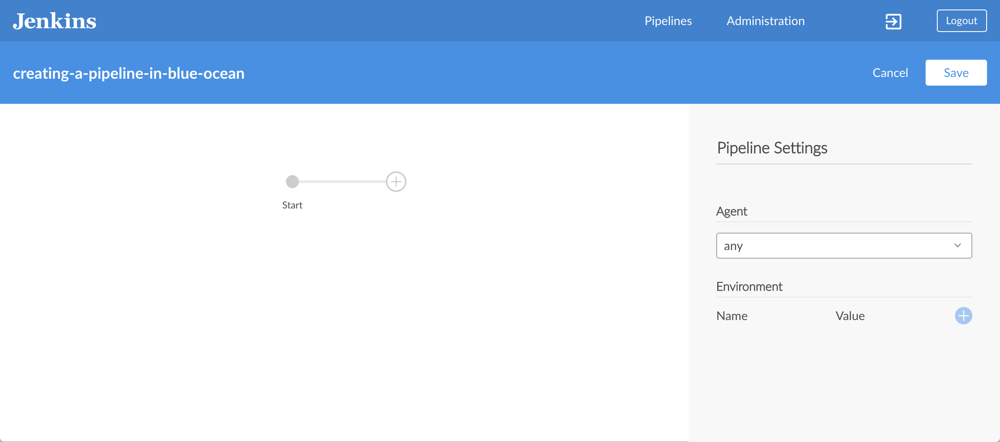
-
In the Image and Args fields that appear, specify
node:lts-alpineand-p 3000:3000respectively.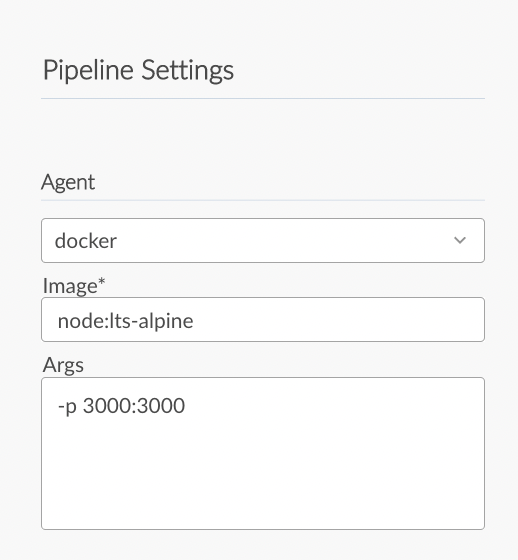
For an explanation of these values, refer to annotations 1 and 2 of the Declarative Pipeline in the "Create your initial Pipeline…" section of the build a Node.js and React app tutorial. -
In the main Pipeline editor, select the + icon, to open the new stage panel on the right side of the icon.
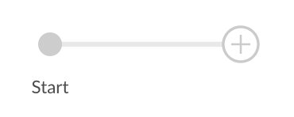
-
In this panel, enter
Buildin the Name your stage field, and then select the Add Step button below. The Choose step type panel opens.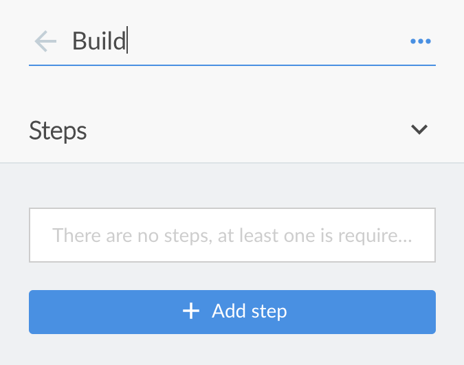
-
In this panel, select Shell Script near the top of the list to configure that step type, which opens the Build / Shell Script panel. Here you can enter this step’s values.
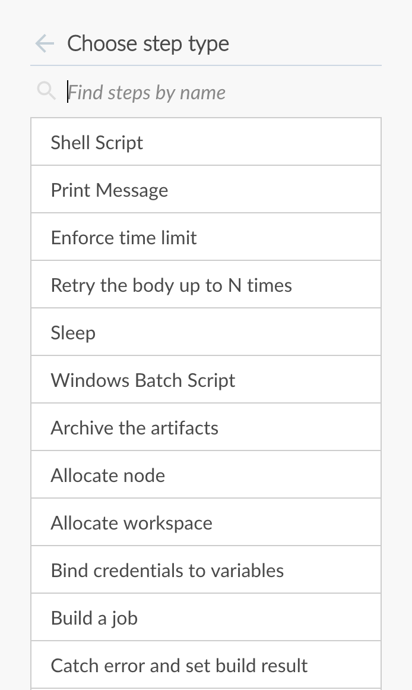
The most commonly used step types appear closest to the top of this list. To find other steps further down this list, you can filter this list using the Find steps by name option. -
In the Build / Shell Script panel, specify
npm install.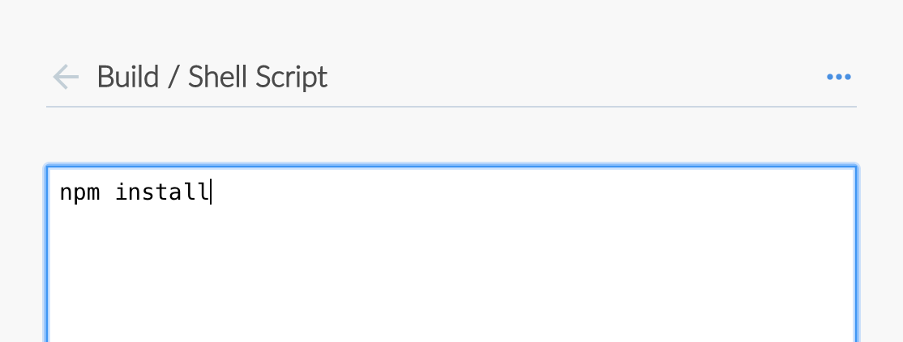
For an explanation of this step, refer to annotation 4 of the Declarative Pipeline in the "Create your initial Pipeline…" section of the build a Node.js and React app tutorial. -
( Optional ) Select the back arrow icon in the upper left to return to the main Pipeline editor.
-
Select Save in the upper right side of the screen to begin saving your new Pipeline with its "Build" stage.
-
In the Save Pipeline dialog box, enter the commit message in the Description field, for example
Add initial Pipeline (Jenkinsfile).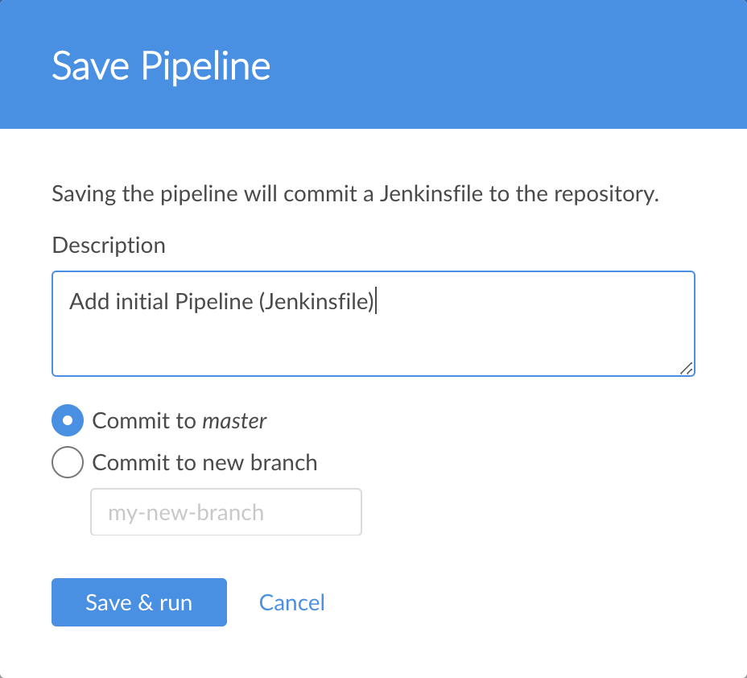
-
Leave all other options set to their default, and then select Save & run. Jenkins proceeds to build your Pipeline.
-
When the main Blue Ocean interface appears, select the row to see Jenkins build your Pipeline project. You’ll need to wait for this first run to complete before proceeding. During this time, Jenkins does the following:
-
Commits your Pipeline as a
Jenkinsfileto the only branch of your repository. -
Initially queues the project to be built on the agent.
-
Downloads the Node Docker image and runs it in a container on Docker.
-
Executes the
Buildstage defined in theJenkinsfileon the Node container.During this time, npmdownloads the dependencies necessary to run your Node.js and React application, which will be stored in the localnode_modulesdirectory in the Jenkins home directory.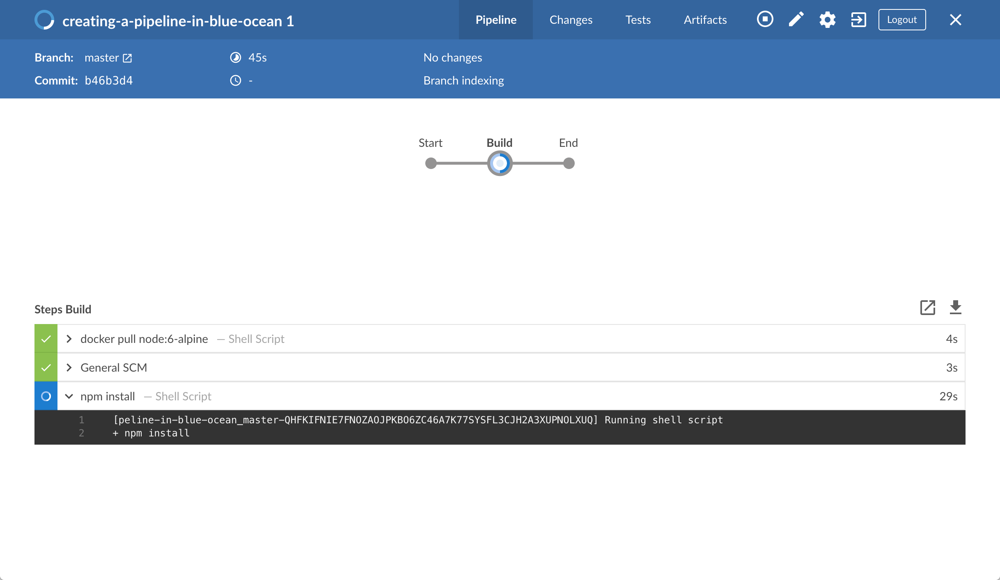 The Blue Ocean interface turns green if Jenkins built your application successfully.
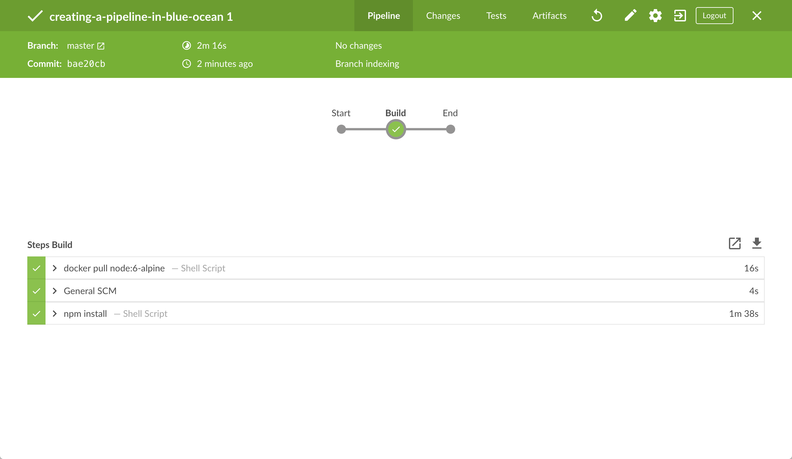
-
-
Select the X in the upper right corner to return to the main Blue Ocean interface.
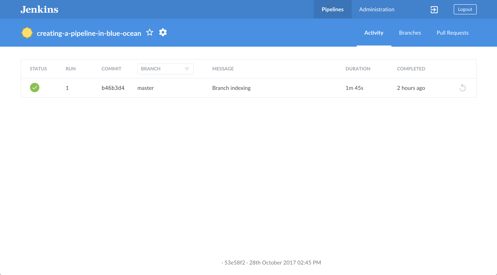
Before continuing on, verify that Jenkins has created a Jenkinsfile for you at the root of your forked GitHub repository, in the repository’s sole master branch.
|
Add a test stage to your Pipeline
-
From the main Blue Ocean interface, select Branches in the upper right to access your repository’s branches page, where you can access the
masterbranch.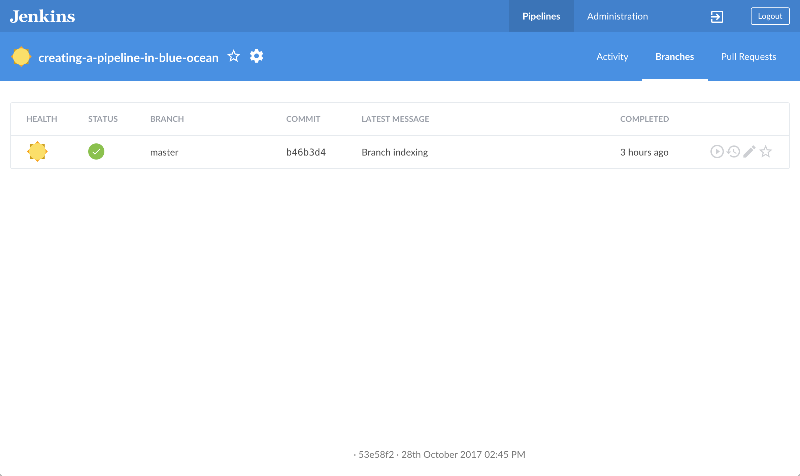
-
Select the
masterbranch’s "Edit Pipeline" icon to open the Pipeline editor for this branch. -
In the main Pipeline editor, select the + icon to the right of the Build stage you created above to open the new stage panel on the right.
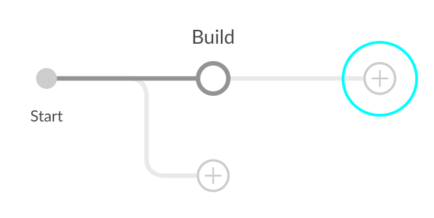
-
In this panel, enter
Testin the Name your stage field, and then select the Add Step button below to open the Choose step type panel. -
In this panel, select Shell Script near the top of the list.
-
In the resulting Test / Shell Script panel, specify
./jenkins/scripts/test.shand then select the back arrow icon in the upper left to return to the Pipeline stage editor. -
At the lower right of the panel, select Settings to reveal this section of the panel.
-
Select the + icon at the right of the Environment heading where you’ll configure an environment directive.
-
In the Name and Value fields that appear, specify
CIandtrue, respectively.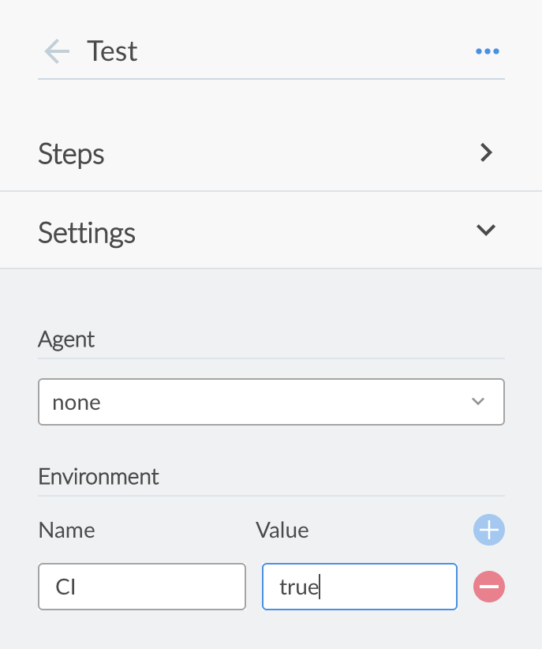
For an explanation of this directive and its step, refer to annotations 1 and 3 of the Declarative Pipeline in the "Add a test stage…" section of the Build a Node.js and React app tutorial. -
( Optional ) Select the back arrow icon in the upper left to return to the main Pipeline editor.
-
Select Save in the top-right corner to begin saving your Pipeline with with its new "Test" stage.
-
In the Save Pipeline dialog box, specify the commit message in the Description field, for example
Add 'Test' stage. -
Leave all other options set to their default, and then select Save & run. Jenkins proceeds to build your amended Pipeline.
-
When the main Blue Ocean interface appears, select the top row to see Jenkins build your Pipeline project.
-
If your amended Pipeline ran successfully, here’s what the Blue Ocean interface should look like, notice the additional "Test" stage. You can select the previous "Build" stage circle to access the output from that stage.
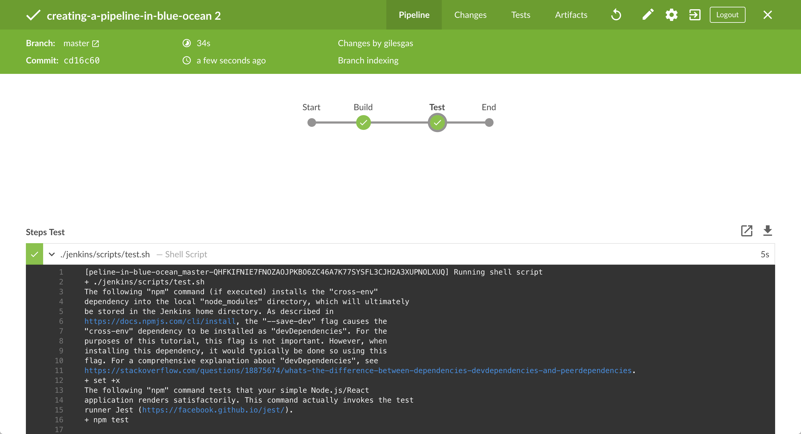
You’ll notice during this run that Jenkins no longer needs to download the Node Docker image. Instead, Jenkins only needs to run a new container from the Node image downloaded previously. Subsequent runs of your Pipeline should be much faster.
-
-
Select the X at the top-right corner to return to the main Blue Ocean interface.
Add a final deliver stage to your Pipeline
-
From the main Blue Ocean interface, select Branches in the upper right to access your repository’s
masterbranch. -
Select the
masterbranch’s "Edit Pipeline" icon to open the Pipeline editor for this branch. -
In the main Pipeline editor, select the + icon to the right of the Test stage you created above to open the new stage panel.
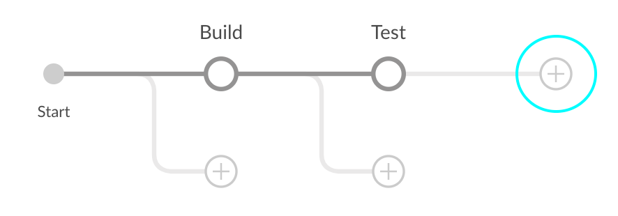
-
In this panel, enter
Deliverin the Name your stage field, and then select Add Step below to open the Choose step type panel. -
In this panel, select Shell Script.
-
In the resulting Deliver / Shell Script panel, specify
./jenkins/scripts/deliver.sh, and then select the back arrow icon to return to the Pipeline stage editor.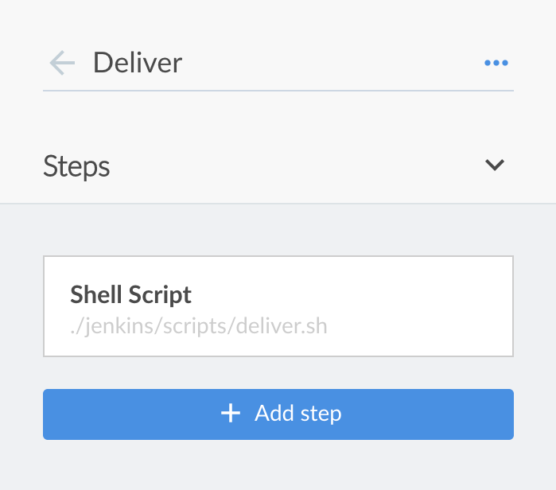
For an explanation of this step, refer to the deliver.shfile itself located in thejenkins/scriptsof your forked repository on GitHub. -
Select Add Step again.
-
In the Choose step type panel, enter
inputin the Find steps by name field. 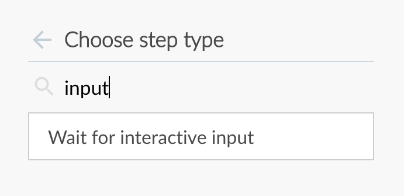 -
Select the filtered Wait for interactive input step type.
-
In the resulting Deliver / Wait for interactive input panel, enter
Finished using the web site? (Select "Proceed" to continue)in the Message field, and then select the back arrow icon to return to the Pipeline stage editor.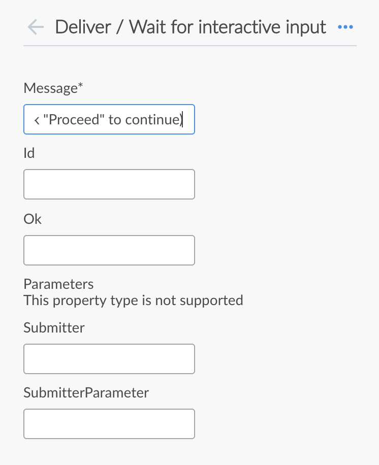
For an explanation of this step, refer to annotation 4 of the Declarative Pipeline in the "Add a final deliver stage…" section of the Build a Node.js and React app tutorial. -
Select Add Step.
-
Select Shell Script.
-
In the resulting Deliver / Shell Script panel, specify
./jenkins/scripts/kill.sh.For an explanation of this step, refer to the kill.shfile itself located in thejenkins/scriptsof your forked repository on GitHub. -
( Optional ) Select the back arrow icon to return to the main Pipeline editor.
-
Select Save in the top-right corner to begin saving your Pipeline with with its new "Deliver" stage.
-
In the Save Pipeline dialog box, enter the commit message in the Description field, for example
Add 'Deliver' stage. -
Leave all other options set to their default, and then select Save & run. Jenkins proceeds to build your amended Pipeline.
-
When the main Blue Ocean interface appears, select the top row to see Jenkins build your Pipeline project.
-
If your amended Pipeline ran successfully, here’s what the Blue Ocean interface should look like. Notice the additional "Deliver" stage. Selecting the previous "Test" and "Build" stage circles provides access to the outputs from those stages.
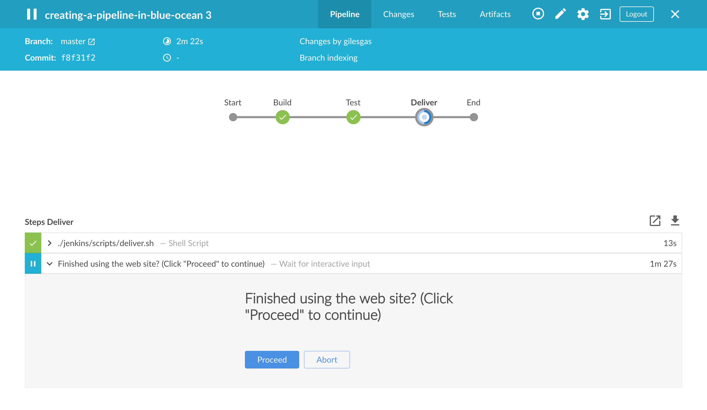
-
-
Ensure you are viewing the "Deliver" stage, then select the green
./jenkins/scripts/deliver.shstep to expand its content and scroll down until you see thehttp://localhost:3000link.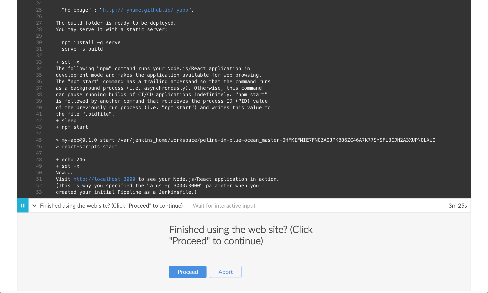
-
Select the
http://localhost:3000link to view your Node.js and React application running in development mode in a new web browser tab. You should see a page/site with the title Welcome to React. -
When you are finished viewing the page/site, select Proceed to complete the Pipeline’s execution.
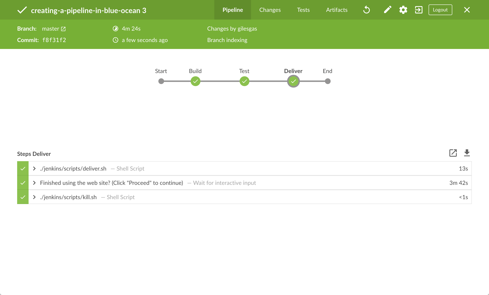
-
Select the X in the top-right corner to return to the main Blue Ocean interface, which lists your previous Pipeline runs in reverse chronological order.
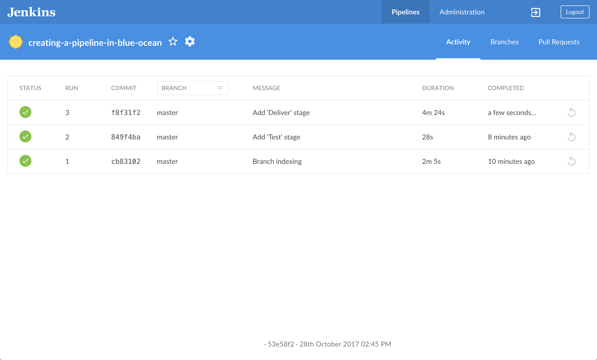
Follow up (optional)
If you check the contents of the Jenkinsfile that Blue Ocean created at the root of your forked creating-a-pipeline-in-blue-ocean repository, note the location of the environment directive.
This directive’s location within the "Test" stage means that the environment variable CI, with its value of true, is only available within the scope of this "Test" stage.
You can set this directive in Blue Ocean, so that its environment variable is available globally throughout Pipeline. This is also configured in the build a Node.js and React app with npm tutorial.
To do this:
-
From the main Blue Ocean interface, select Branches in the upper right to access your repository’s
masterbranch. -
Select the
masterbranch’s "Edit Pipeline" icon to open the Pipeline editor for this branch. -
In the main Pipeline editor, select the Test stage you created above to begin editing it.
-
In the stage panel, select Settings to reveal this section of the panel.
-
Select the minus (-) icon associated with the
CIenvironment directive you created earlier to delete it. -
Select the back arrow icon to return to the main Pipeline editor.
-
In the Pipeline Settings panel, select the + icon to the right side of the Environment heading. Here, you’ll configure a global environment directive.
-
In the Name and Value fields, specify
CIandtrue, respectively. -
Select the Save button to begin saving your Pipeline with with its relocated environment directive.
-
In the Save Pipeline dialog box, enter the commit message in the Description field, for example
Make environment directive global. -
Leave all other options set to their default, and then select Save & run. Jenkins proceeds to build your amended Pipeline.
-
When the main Blue Ocean interface appears, select the top row to see Jenkins build your Pipeline project. This starts the same build process as when you completed adding the final deliver stage above. However, when you inspect the
Jenkinsfileagain, you’ll notice that theenvironmentdirective is now a sibling of theagentsection.
Wrapping up
Well done! You’ve used the Blue Ocean feature of Jenkins to build a simple Node.js and React application with npm.
The "Build," "Test," and "Deliver" stages you created are the basis for building other applications in Jenkins with any technology stack, including more complex applications and ones that combine multiple technology stacks.
Because Jenkins is extremely extensible, it can be modified and configured to handle almost any aspect of build orchestration and automation.
To learn more about what Jenkins can do, check out:
-
The Tutorials overview page for other introductory tutorials.
-
The User Handbook for more detailed information about using Jenkins, such as Pipelines, Pipeline syntax, and the Blue Ocean interface.
-
The Jenkins blog for the latest events, other tutorials, and updates.